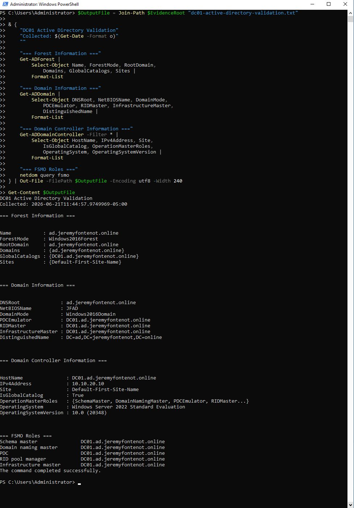
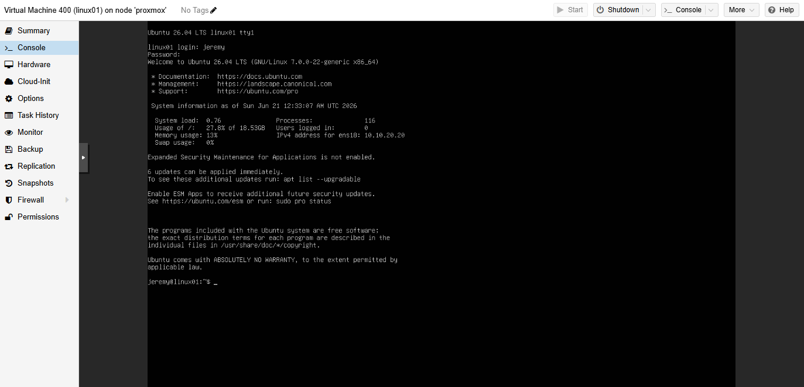
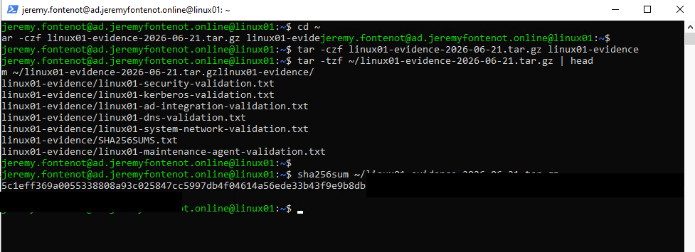

Validated
Direct evidence confirms the stated behavior or current state.
Home Lab / Infrastructure Operations
A personal nonproduction lab that supports systems administration learning and technical review: Dell PowerEdge R710, Proxmox VE, pfSense, Windows Server 2022, Active Directory, DNS, DHCP, Group Policy, WS01, Linux01, OpenVPN management path, logging, backups, and evidence governance.
Evidence Strength Legend
Direct evidence confirms the stated behavior or current state.
A relevant test was performed and recorded, but the result may be narrower than the full claim.
Configuration is present; behavior is not expanded beyond supporting evidence.
Known gaps, timeouts, historical records, or unsupported conclusions remain visible.
Architecture Layers
Current Verified State
Linux01 is treated as VLAN 30 at 10.10.30.20/24. Older Linux01 10.10.20.x evidence is historical. Backup storage is shown as backup-hdd. Restore evidence is retained as isolated startup checks, not recurring disaster-recovery assurance.
DC01 evidence supports AD DS, DNS, DHCP, Group Policy, FSMO roles, and Windows Server 2022 context.
Linux01 records support Ubuntu Server 26.04 LTS, VLAN 30 placement, domain membership, SSSD remediation, Kerberos, SSH, UFW, sudo, and QEMU guest agent claims where cited.
Current records validate backup job visibility and retained isolated restore checks. They do not establish recurring restore success, RTO, RPO, or production disaster recovery readiness.
Supporting Evidence





Reviewer Artifacts
{kind=link}
{kind=link}
{kind=link}